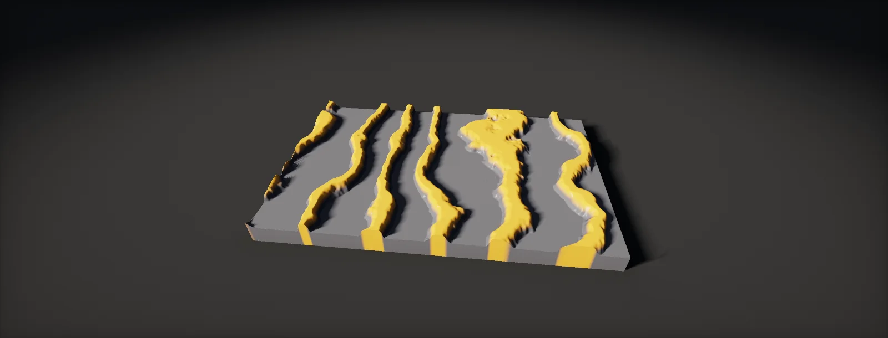

Warps and Distortion
How Substance Designer bends and frays patterns: a warp reads its input at shifted positions. Directional Warp, Warp along a gradient, Vector Warp, Slope Blur, the artefacts they cause and what they cost.

A warp reads from somewhere else
Procedural patterns come out too perfect: straight lines, round dots, even noise. Warps are how they get bent, frayed and worn. All warp nodes share one idea: an output pixel does not read the input at its own position, but a little to the side, and how far and in which direction comes from a second image.
The direction of the arrow matters. A warp does not push pixels to new places, which could leave holes. Every output pixel fetches from a shifted position, so the result is always complete; where neighbouring pixels fetch from almost the same spot, the input stretches, and where they fetch from far apart spots, it tears. This is the same gather you use in a shader whenever you offset a UV before sampling (flow maps):
Directional Warp
Directional Warp is the simplest warp. Every pixel reads along one fixed direction, the Warp Angle (in turns: 0.25 is a quarter turn), and how far it reads comes from a greyscale intensity input: white reads far, black not at all. Intensity scales the distance, and Intensity Map Offset is subtracted from the map first, so values below the offset read backwards.
Typical uses: wood grain (stretch noise along the board, warp it sideways with a soft noise), irregular stitches and weave in fabric, cracks that wander instead of running straight. Two settings decide the look. The scale of the intensity map: coarse noise bends the image as a whole, fine noise frays every edge. And the intensity: small values look natural; large ones produce visible smears in the warp direction, the classic warped-too-far look.
Because the shift has one direction everywhere, a directional warp keeps parallel lines parallel. That makes it predictable, and it tiles as long as the intensity map tiles.
Warp: along a gradient
The atomic Warp node has no angle. It takes the slope of its gradient input: at every pixel, which way is uphill and how steep. Pixels read in the uphill direction, as far as the slope is steep. On a round white spot the slopes point to its centre from all sides, so the content near the centre is copied outward: the image looks pushed away from white areas.
Only slopes move pixels. Large flat areas of the gradient input, pure white or pure black, stay untouched, and the strongest warps happen where the gradient input changes fastest. That is why Adobe warns that the result depends heavily on the gradient input: a Levels or blur on it changes the warp more than the intensity slider does. Blur the gradient input slightly before warping with it; sharp edges in it make sharp, torn warps.
Vector Warp: directions in a colour
Sometimes one direction is not enough and a gradient is not what you want: pebbles should push sand away from their own centres, fibres should follow a hand-made flow. A vector map stores a direction per pixel in its red and green channels, with 0.5 meaning zero: red above 0.5 points right, below 0.5 left; green does the same vertically. Vector Warp reads that map and shifts each pixel by its direction times the intensity.
This is exactly how a tangent-space normal map is encoded, so a normal map makes a good vector map: content slides off the bumps. Mind the green channel. DirectX-style maps point green down, OpenGL-style maps up (normal formats); with the wrong one the warp goes up instead of down. If a node has a vector format setting, match it to the map; otherwise invert the green channel.
Build vector maps in a float format (16F): a direction needs values on both sides of zero, and at 8 bits the 0.5 centre is not exactly representable (127 and 128 are the two nearest). Multi-Directional Warp is a related library node: it warps in several directions and combines them, which gives softer, less streaky results than one directional warp.
Slope Blur: erosion and growth
Slope Blur reads many times along the slope of a second image instead of once: with 16 samples, every pixel looks at 17 positions along the direction of the slope and combines them. What it does with them is the mode. Blur averages, a smear that follows the slope image. Min keeps the darkest value, so a shape gets eaten away from its edges, chipped and eroded. Max keeps the brightest, so it grows ragged outgrowths:
Slope Blur in Min mode with a fine noise is behind most worn stone edges, chipped paint and broken tiles in Substance materials. Too few samples leave visible copies of the shape instead of a smooth erosion; more samples look better and cost proportionally more. A related node, Non-Uniform Blur, varies the blur radius per pixel from a map, for blurry areas next to sharp ones.
Artefacts and how to avoid them
- Smears and streaks. Intensity too high for the scale of the intensity map. Use two small warps with different maps instead of one large one, or a Multi-Directional Warp.
- Torn edges. Sharp edges in the intensity or gradient input. Blur it a little first; the warp follows its slope, and a hard edge is an infinite slope.
- Seams at the texture border. Warps read across the border and wrap around, so the result tiles only if every map involved tiles. Built-in noises tile; a bitmap or a non-tiling shape does not.
- Blocky or jagged results. The node's filtering mode is nearest. Bilinear reads between pixels and is smoother.
- Different results at a different size. Intensities are in relative units, so a graph usually looks the same at 1k and 4k. Bitmaps and absolute sizes in the chain break that; test at two parent sizes.
What warps cost
Adobe's guidelines name blurs and warps as the most processor-intensive nodes, and advise against warps for graphs that render on mobile. The reason is the reads. A Levels node reads one pixel per output pixel, in order. A warp reads from a computed position, and a Slope Blur reads once per sample, often 16 or 32 times:
Three habits keep it in check. Build and tune warps at a low parent size, since their look is resolution independent. Merge chains: three Directional Warps in a row can often be one with a better intensity map. And keep samples as low as the result allows; going from 32 to 16 samples halves the node's cost. Keeping Graphs Fast covers how to measure it.
Set it up in Designer and Unity HDRP
In Designer, a chipped stone tile built from the unit's three main warps, with a quick tiling check. In Unity HDRP, the same gather as a Custom Function: warping UVs at runtime for heat haze, wobbling glass or animated water, which Designer cannot do because its output is baked. Written for Substance 3D Designer 14 and later, Unity 6 with HDRP 17 and the Substance 3D for Unity plugin; menu names can differ slightly between versions.
- In Designer, add a Shape node (square, slightly smaller than the tile) and a Perlin Noise or Clouds 2 node at a fine scale.
- Add Slope Blur Grayscale: the shape into the main input, the noise into the slope input. Mode
Min, Samples16, a small intensity. The square's edges now look chipped. - Add Directional Warp after it with a coarse noise as intensity input, angle
0.25, small intensity: the stone loses its perfect outline. Add a Warp with a blurred noise as gradient input for a gentle overall bulge. - Check tiling: add a Transformation 2D at the end with an offset of (0.5, 0.5). The former border is now in the middle of the view; any seam there means one of the warp inputs does not tile. Delete the check node afterwards.
- Set the parent size to 512 and to 2048 and compare. The look should match; if it changes, an Absolute-size node or a bitmap in the chain is the cause.
- In Unity, save
Warps.hlsl. Create the graph: in the Project window, Create > Shader Graph > HDRP > Lit Shader Graph. Open it and check the Graph Inspector > Graph Settings. Add properties_MainTex(Texture2D),_NoiseTex(Texture2D, a tiling noise, sRGB off),_Intensity(Float, 0–0.1),_Angle(Float, 0–1) and_Speed(Float). - Add a Sampler State node. Build the noise UV: UV plus Time ×
_Speed. Then add a Custom Function node. Set Type toFile, Source toWarps.hlsland Name toDirectionalWarpUV(without the_floatsuffix). Add the inputs UV (Vector 2), NoiseTex (Texture 2D), NoiseUV (Vector 2), SS (Sampler State), Intensity (Float), Angle (Float), Offset (Float) and the outputs WarpedUV (Vector 2), in that order and with those types: they must match the function's parameters. - Sample
_MainTexwith WarpedUV and connect it to Base Color. For a normal map as vector map, useVectorWarpUVinstead and pass the normal texture; set FlipGreen to 1 if it is a DirectX-style map. - For distortion of what is behind a surface (heat haze, glass), use the warped offset on the screen position and sample the scene colour in a transparent material; HDRP's Distortion pass in the Unlit and Lit graphs does this for you.
#ifndef ATLAS_WARPS_INCLUDED
#define ATLAS_WARPS_INCLUDED
// Runtime versions of Designer's warps. They return warped UVs: sample your texture with them.
// Like Designer, every pixel fetches from a shifted position (a gather).
// Directional Warp: one direction (Angle in turns), distance from a greyscale noise.
void DirectionalWarpUV_float(float2 UV, UnityTexture2D NoiseTex, float2 NoiseUV, UnitySamplerState SS,
float Intensity, float Angle, float Offset, out float2 WarpedUV)
{
float i = SAMPLE_TEXTURE2D(NoiseTex.tex, SS.samplerstate, NoiseUV).r - Offset;
float a = Angle * 6.2831853;
WarpedUV = UV + Intensity * i * float2(cos(a), sin(a));
}
// Vector Warp: the direction per pixel comes from R and G (0.5 = no shift), e.g. a normal map.
// FlipGreen = 1 for DirectX-style maps, whose green points down.
void VectorWarpUV_float(float2 UV, UnityTexture2D VectorTex, float2 VectorUV, UnitySamplerState SS,
float Intensity, float FlipGreen, out float2 WarpedUV)
{
float2 d = SAMPLE_TEXTURE2D(VectorTex.tex, SS.samplerstate, VectorUV).rg * 2.0 - 1.0;
d.y = FlipGreen > 0.5 ? -d.y : d.y;
WarpedUV = UV + Intensity * d;
}
// Warp along a gradient: reads uphill, as far as the slope is steep. Needs four extra samples.
void GradientWarpUV_float(float2 UV, UnityTexture2D GradTex, float2 GradUV, UnitySamplerState SS,
float Intensity, out float2 WarpedUV)
{
float2 e = GradTex.texelSize.xy;
float gx = SAMPLE_TEXTURE2D(GradTex.tex, SS.samplerstate, GradUV + float2(e.x, 0)).r
- SAMPLE_TEXTURE2D(GradTex.tex, SS.samplerstate, GradUV - float2(e.x, 0)).r;
float gy = SAMPLE_TEXTURE2D(GradTex.tex, SS.samplerstate, GradUV + float2(0, e.y)).r
- SAMPLE_TEXTURE2D(GradTex.tex, SS.samplerstate, GradUV - float2(0, e.y)).r;
WarpedUV = UV + Intensity * float2(gx, gy) / (2.0 * e);
}
#endifA runtime warp costs one extra texture read per warp (four for the gradient version) in every pixel the material covers. That is cheap for a few objects and adds up on large surfaces; bake static warps in Designer instead.
Sources and further reading
The formulas and engine details in this unit come from these references. Engine documentation changes between versions.
- DocsWarp (atomic node)AdobeGradient input, intensity, and why the gradient decides the result.
- DocsDirectional Warp (atomic node)AdobeIntensity input, warp angle in turns and intensity map offset.
- DocsMulti-Directional WarpAdobeWarping in several directions at once.
- DocsPerformance optimization guidelinesAdobeBlurs and warps as the most expensive nodes.